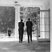
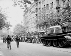
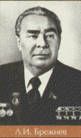

Page index / courses
1960-1970
Tension continued to grow between the United States and The Soviet Union during the course of the 1960s.
The United States enters the Vietnam conflict
The Cuban missle crisis:White House tapes
The Cuban missle crisis:description of events

Letter from Czech hardliners to Soviet Government
The invasion of Czechoslovakia: 1968

The decade was also witness to a number of internal changes within the Soviet Union.
